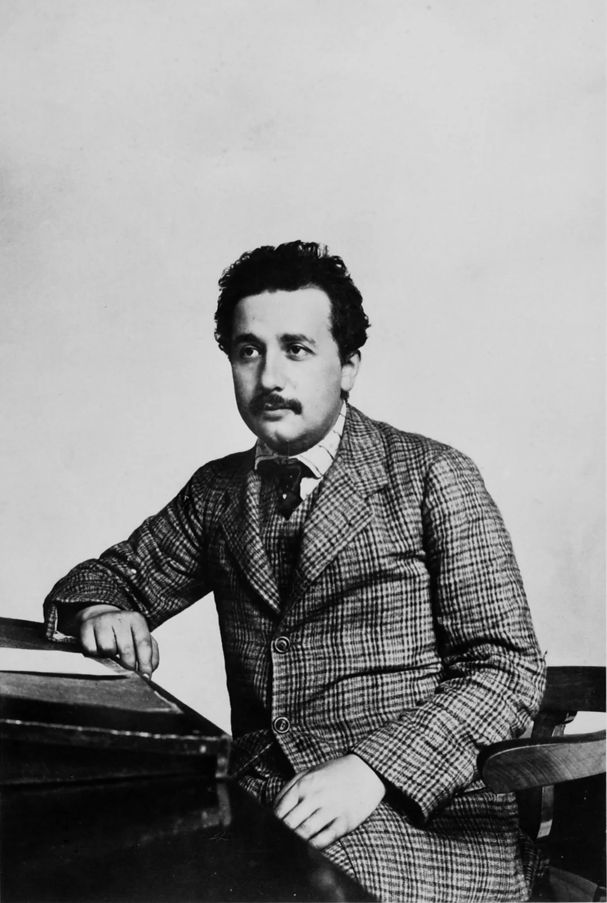
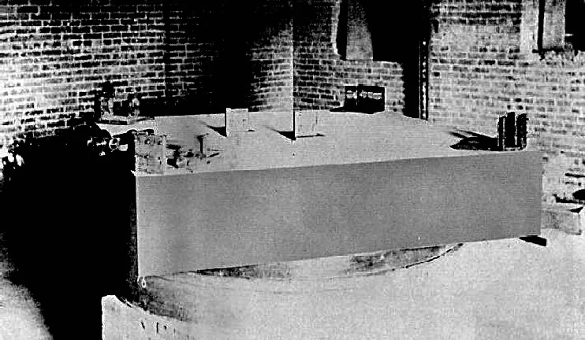
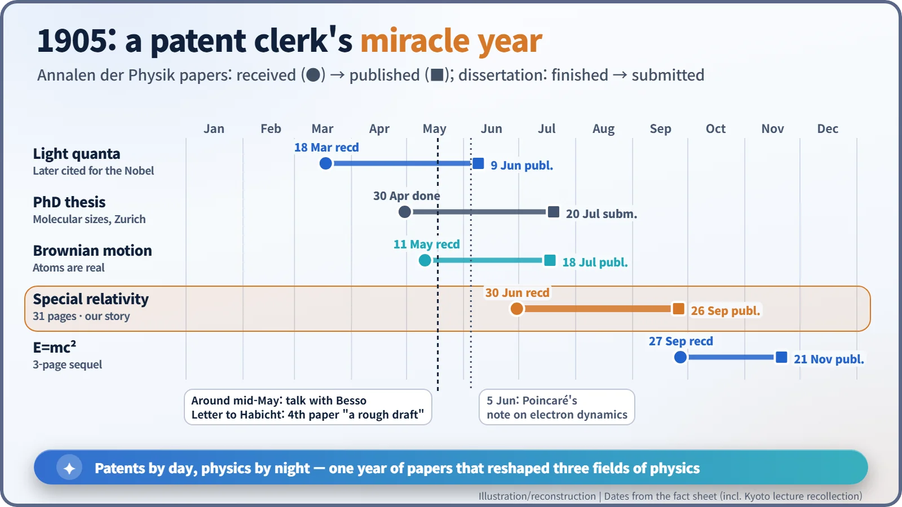
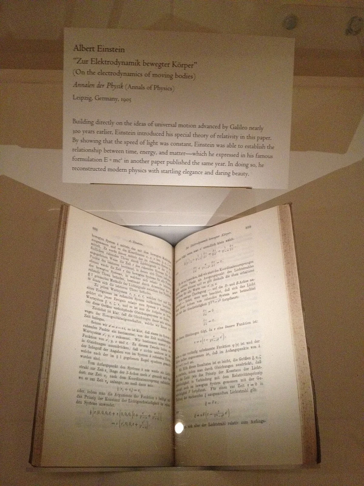
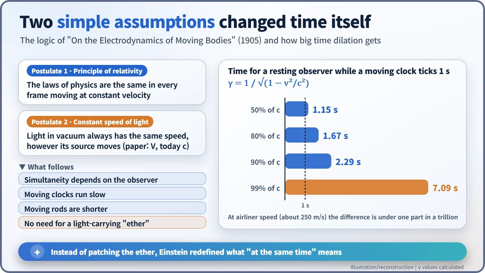

Nuclear History · 015
Can You Catch Up with a Light Beam? — The Patent Clerk's Miracle Year and Einstein's Special Relativity (1905)
In his miracle year of 1905, Albert Einstein kept the principle of relativity and the constant speed of light, and gave up absolute time instead.
In 1905 a 26-year-old patent examiner in Bern published four papers that changed physics. One of them, received on 30 June, started from just two assumptions: the laws of physics are the same for everyone moving steadily, and the speed of light is the same for everyone. From these Einstein concluded that time itself is relative, and that the ether everyone had been searching for was not needed at all.
Chasing a beam of light
Imagine running alongside a beam of light, just as fast as the light itself. Would the beam look like a frozen wave, hanging motionless beside you? That was the puzzle a 16-year-old Albert Einstein (1879–1955) kept turning over in his head. Decades later he recalled that such a thing appears neither in experience nor in Maxwell's equations. Ten years after first asking the question, he would overturn our ideas of time and space. [4]

Newton or Maxwell: who is right?
At the end of the 19th century, physics stood on two pillars. One was Newton's mechanics. Throw a ball forward at 10 km/h inside a train doing 100 km/h, and someone on the platform sees it move at 110 km/h. Speeds simply add. The other pillar was James Clerk Maxwell's theory of electricity and magnetism, which gives the speed of light as one single, fixed value.
But fixed relative to what? The standard answer was the ether, an invisible medium thought to fill all of space and carry light the way air carries sound. If that were true, Earth would be racing through the ether, and light should appear to travel at slightly different speeds in different directions.
In 1887, in Cleveland, Ohio, Albert A. Michelson and Edward W. Morley went looking for that difference with an exquisitely sensitive instrument. The expected effect did not show up. The Dutch physicist Hendrik Lorentz tried to explain the result by proposing that moving objects shrink slightly along their direction of motion, together with new equations for converting between moving frames. The French mathematician Henri Poincaré presented similar mathematics on 5 June 1905. Both approaches, however, still assumed the ether was there; they were patches on the old picture. [7] [8]

Patents by day, the universe by night
Einstein was not a professor at the time. From June 1902 he worked at the Swiss Federal Patent Office in Bern as a "technical expert, third class", earning 3,500 Swiss francs a year to examine patent applications. He later called the office "that worldly cloister where I hatched my most beautiful ideas" (as quoted, in English, by the Swiss Federal Institute of Intellectual Property). [5]
In May 1905 he wrote to his friend Conrad Habicht, promising four papers. The first, on radiation and the energy of light, was in his words "very revolutionary". The second and third dealt with the true sizes of atoms and with Brownian motion. And then: "The fourth paper is only a rough draft at this point, and is an electrodynamics of moving bodies which employs a modification of the theory of space and time." (These lines come from the standard English translation of his German letter.) Notice that the paper he called revolutionary was not the one on relativity. [3]

In an impromptu lecture in Kyoto on 14 December 1922, Einstein described how the breakthrough came. He said he had spent almost a year in vain trying to modify Lorentz's ideas. Then, on a beautiful day, he took the problem to his friend and patent-office colleague Michele Besso, and the two discussed every aspect of it. The next day he came back and, without even saying hello, told Besso: "Thank you. I've completely solved the problem." The key, he said, was an analysis of the concept of time, and "within five weeks the special theory of relativity was completed." A caution: no German text of this talk survives. We know it only from his interpreter Jun Ishiwara's Japanese notes, so the wording differs from one translation to another. [2]
Just two assumptions
On 30 June 1905 the journal Annalen der Physik received a 31-page paper titled "Zur Elektrodynamik bewegter Körper" ("On the Electrodynamics of Moving Bodies"). It was published on 26 September. The title did not even contain the word "relativity". The paper had no reference footnotes, and the only person Einstein thanked was Besso. [1]

The whole argument starts from two assumptions. First, the laws of physics are the same in every frame of reference moving at constant velocity (the principle of relativity). Second, light in empty space always travels at the same speed, no matter how its source is moving (the constancy of the speed of light). Each sounds reasonable. Put them together, though, and light fired forward from a moving train must still have the same speed for someone on the platform. The common-sense rule of adding speeds breaks down.
Einstein kept both assumptions and questioned something else: the idea of "at the same time". Two events that are simultaneous for one observer need not be simultaneous for another observer moving relative to the first. From there the consequences follow one after another. Moving clocks run slow (time dilation). Moving rods are shorter along their direction of motion (length contraction). And, as he put it, "the introduction of a 'light ether' will prove to be superfluous" (our translation of the German original). [1]

How big is the effect? While a clock moving at 90% of the speed of light ticks off one second, about 2.29 seconds pass for an observer at rest. At airliner speed the difference is less than one part in a trillion, which is why nobody notices it in daily life.
| Speed of the moving clock | Time for a resting observer per 1 s on the moving clock |
|---|---|
| 50% of light speed | 1.15 s |
| 80% of light speed | 1.67 s |
| 90% of light speed | 2.29 s |
| 99% of light speed | 7.09 s |
| Airliner, about 250 m/s | 1 s plus less than one trillionth |
Three common myths
- "He won the Nobel Prize for relativity." No. The 1921 prize, awarded in 1922, was "for his services to Theoretical Physics, and especially for his discovery of the law of the photoelectric effect." [6]
- "He built it out of nothing." His equations were almost the same as those of Lorentz and Poincaré. What was new was the reading: he started from two postulates, rethought time itself and threw out the ether.
- "He set out to explain the Michelson–Morley result." This cannot be stated as fact. The 1905 paper does not mention the experiment by name, and historians still debate how much it influenced him.
Some have also argued that his first wife, Mileva Marić, was a co-author; most historians of science judge that the first-hand evidence for this is weak.
The bonus, three months later
On 27 September 1905 Einstein sent off a three-page follow-up that he drew straight from the new theory: the mass–energy relation that would later become the starting point of nuclear energy. In 1908 the mathematician Hermann Minkowski reworked relativity as a single four-dimensional "spacetime". Time dilation has since been confirmed by measurements of muon lifetimes and by flying atomic clocks around the world on airliners (1971). GPS satellite clocks have to be corrected for it today.
So what was the answer to the teenager's question? However fast you run, light always moves away from you at the same speed. What changes instead are time and space.